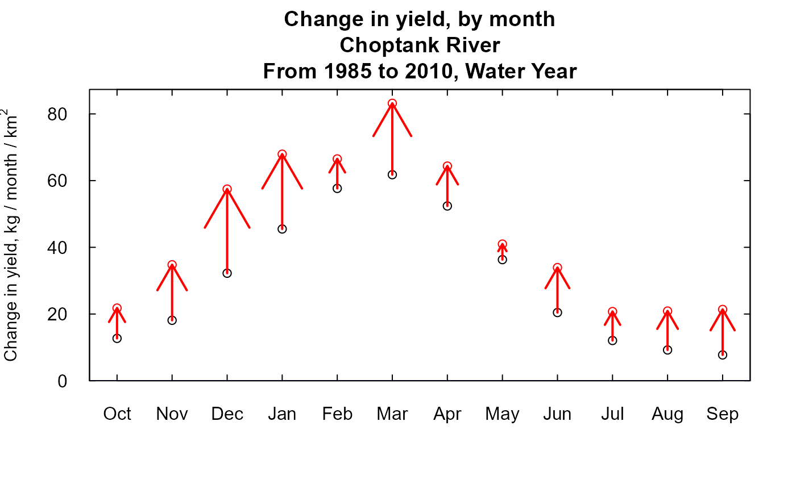
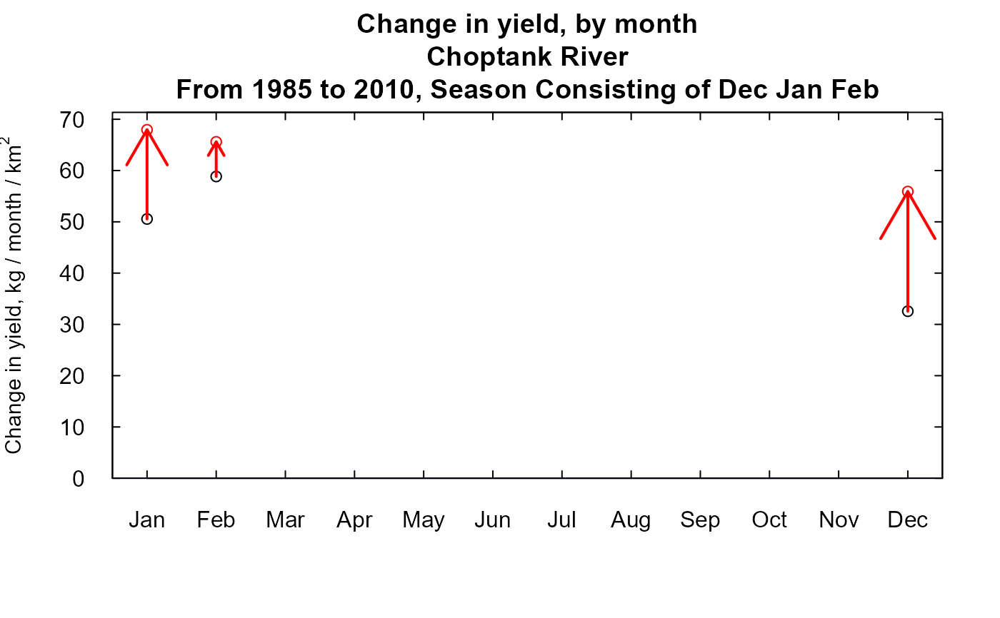

runPairs provides comparisons of results, in terms of
flow-normalized concentration and flow-normalized flux for any pair
of years in the water quality record. Comparison could involve the
use of the "wall" and/or use of "generalized flow normalization".
These two concepts are described in detail in the vignette:
vignette("Enhancements", package = "EGRET").
Usage
runPairs(eList, year1, year2, windowSide, flowBreak = FALSE,
Q1EndDate = NA, QStartDate = NA, QEndDate = NA, wall = FALSE,
oldSurface = FALSE, sample1EndDate = NA, sampleStartDate = NA,
sampleEndDate = NA, paStart = NA, paLong = NA, minNumObs = 100,
minNumUncen = 50, fractMin = 0.75, windowY = 7, windowQ = 2,
windowS = 0.5, edgeAdjust = TRUE, saveOutput = FALSE,
fileName = "temp.txt", verbose = TRUE)Arguments
- eList
named list with at least the Daily, Sample, and INFO dataframes
- year1
integer the ending year of the first year in the pair
- year2
integer the ending year of the second year in the pair
- windowSide
integer. The width of the flow normalization window on each side of the year being estimated. A common value is 11, but no default is specified. If stationary flow normalization is to be used, then windowSide = 0 (this means that flow-normalization period for all years is the same).
- flowBreak
logical. Is there an abrupt break in the discharge record, default is FALSE.
- Q1EndDate
The Date (as character in YYYY-MM-DD) which is the last day, just before the flowBreak.
- QStartDate
The first Date (as character in YYYY-MM-DD) used in the flow normalization method. Default is NA, which makes the QStartDate become the first Date in eList$Daily.
- QEndDate
The last Date (as character in YYYY-MM-DD) used in the flow normalization method. Default is NA, which makes the QEndDate become the last Date in eList$Daily.
- wall
logical. Whether there is an abrupt break in the concentration versus discharge relationship due to some major change in pollution control or water management. Default is FALSE.
- oldSurface
logical specifying whether to use the original surface, or create a new one. Default is FALSE.
- sample1EndDate
The Date (as character in YYYY-MM-DD) of the last date just before the wall. Default = NA. A date must be specified if wall = TRUE.
- sampleStartDate
The Date (as character in YYYY-MM-DD) of the first sample to be used. Default is NA which sets it to the first Date in eList$Sample.
- sampleEndDate
The Date (as character in YYYY-MM-DD) of the last sample to be used. Default is NA which sets it to the last Date in eList$Sample.
- paStart
numeric integer specifying the starting month for the period of analysis, 1<=paStart<=12. Default is NA, which will use the paStart in the eList$INFO data frame. See also
setPA.- paLong
numeric integer specifying the length of the period of analysis, in months, 1<=paLong<=12. Default is NA, which will use the paLong in the eList$INFO data frame. See also
setPA.- minNumObs
numeric specifying the miniumum number of observations required to run the weighted regression, default is 100
- minNumUncen
numeric specifying the minimum number of uncensored observations to run the weighted regression, default is 50
- fractMin
numeric specifying the minimum fraction of the observations required to run the weighted regression, default is 0.75. The minimum number will be the maximum of minNumObs and fractMin multiplied by total number of observations.
- windowY
numeric specifying the half-window width in the time dimension, in units of years, default is 7
- windowQ
numeric specifying the half-window width in the discharge dimension, units are natural log units, default is 2
- windowS
numeric specifying the half-window with in the seasonal dimension, in units of years, default is 0.5
- edgeAdjust
logical specifying whether to use the modified method for calculating the windows at the edge of the record. The edgeAdjust method tends to reduce curvature near the start and end of record. Default is TRUE.
- saveOutput
logical. If
TRUE, a text file will be saved in the working directory of the printout of what is in the console output. Default isFALSE.- fileName
character. Name to save the output file if
saveOutput=TRUE.- verbose
logical specifying whether or not to display progress message
Value
Data frame with 7 columns and 2 rows. The first row is about trends in concentration (mg/L), the second column is about trends in flux (million kg/year). The data frame has a number of attributes.
| Column Name | Description |
| Total Change | The difference between the results for year2 - year1 (x22 - x11) |
| CQTC | CQTC is the "Concentration v. Q Trend Component." It is the component of total change due to the change in the CQR (Concentration Discharge Relationship). (x20 - x10). |
| QTC | QTC is the "Q Trend Component." It is the component of total change due to the trend in the QD (Discharge Distribution). (x22 - x11 - x20 + x10). |
| x10 | The estimated value based on the CQR computed for year1, integrated over the QD for the entire timespan of the Daily data frame (or the period QStartDate and to QEndDate if these are specified). |
| x11 | The estimated value based on the CQR for year1, integrated over the QD specified by the user for year1. |
| x20 | The estimated value based on the CQR computed for year2, integrated over the QD for the entire period of record. |
| x22 | The estimated value based on the CQR for year2, integrated over the QD specified by the user for year2. |
Additionally, there is an attribute on the data frame "Other", containing a list that includes minNumObs=minNumObs, minNumUncen, windowY, windowQ, siteName, windowS, wall, edgeAdjust, QStartDate, QEndDate, PercentChangeConc, and PercentChangeFlux.
PercentChangeConc, and PercentChangeFlux are vectors where: Total Percent Change is the Total Change divided by x11 CQTC Percent is the CQTC divided by x11 QTC Percent is the QTC divided by x11
Another attribute is "byMonth". This is a data frame with the flux and concentration changes by month.
Details
When using generalized flow-normalization, it is best to have the Daily data frame extend well beyond the years that are in the Sample data frame. Ideally, the Daily data frame would start windowSide years before the start of the Sample data set, if the data exist to provide for that. Generally that isn't possible for the end of the record because the Sample data may end very close to the present. To the extent that is possible therefore, it is better to include more discharge data after the end of the Sample record. Also note that in the case run in the examples don't do that, because the data set needs to be appropriate for stationary flow normalization as well (and package size considerations make it difficult to include specialized examples).
Examples
eList <- Choptank_eList
year1 <- 1985
year2 <- 2010
# \donttest{
# Automatic calculations based on windowSide = 11
# four possible ways to do generalized flow normalization:
#Option 1: Use all years for flow normalization.
pairOut_1 <- runPairs(eList, year1, year2, windowSide = 0)
#> Sample1 has 606 Samples and 605 are uncensored
#> Sample2 has 606 Samples and 605 are uncensored
#> minNumObs has been set to 100 minNumUncen has been set to 50
#> Sample1 has 606 Samples and 605 are uncensored
#> Sample2 has 606 Samples and 605 are uncensored
#> minNumObs has been set to 100 minNumUncen has been set to 50
#>
#> Choptank River
#> Inorganic nitrogen (nitrate and nitrite)
#> Water Year
#>
#> Change estimates 2010 minus 1985
#>
#> For concentration: total change is 0.429 mg/L
#> expressed as Percent Change is +42.27 %
#>
#> Concentration v. Q Trend Component +42.27 %
#> Q Trend Component 0 %
#>
#>
#> For flux: total change is 0.0342 million kg/year
#> expressed as Percent Change is +29.44 %
#>
#> Concentration v. Q Trend Component +29.44 %
#> Q Trend Component 0 %
#>
#> TotalChange CQTC QTC x10 x11 x20 x22
#> Conc 0.429 0.429 0 1.01 1.01 1.44 1.44
#> Flux 0.034 0.034 0 0.12 0.12 0.15 0.15
# Option 2: Use different windows for flow normalization for year1 versus year2
# In each case it is a 23 year window (23 = 1 + 2*11)
pairOut_2 <- runPairs(eList, year1, year2, windowSide = 11)
#> Sample1 has 606 Samples and 605 are uncensored
#> Sample2 has 606 Samples and 605 are uncensored
#> minNumObs has been set to 100 minNumUncen has been set to 50
#> Sample1 has 606 Samples and 605 are uncensored
#> Sample2 has 606 Samples and 605 are uncensored
#> minNumObs has been set to 100 minNumUncen has been set to 50
#>
#> Choptank River
#> Inorganic nitrogen (nitrate and nitrite)
#> Water Year
#>
#> Change estimates 2010 minus 1985
#>
#> For concentration: total change is 0.407 mg/L
#> expressed as Percent Change is +39.74 %
#>
#> Concentration v. Q Trend Component +41.93 %
#> Q Trend Component -2.19 %
#>
#>
#> For flux: total change is 0.0476 million kg/year
#> expressed as Percent Change is +42.99 %
#>
#> Concentration v. Q Trend Component +30.87 %
#> Q Trend Component +12.12 %
#>
#> TotalChange CQTC QTC x10 x11 x20 x22
#> Conc 0.407 0.429 -0.022 1.01 1.02 1.44 1.43
#> Flux 0.048 0.034 0.013 0.12 0.11 0.15 0.16
# Option 3: Flow normalization is based on splitting the flow record at 1990-09-30
# But year1 uses all flow data from before the break,
# year2 uses all flow data after the break
pairOut_3 <- runPairs(eList, year1, year2,
windowSide = 0, flowBreak = TRUE,
Q1EndDate = "1990-09-30")
#> Sample1 has 606 Samples and 605 are uncensored
#> Sample2 has 606 Samples and 605 are uncensored
#> minNumObs has been set to 100 minNumUncen has been set to 50
#> Sample1 has 606 Samples and 605 are uncensored
#> Sample2 has 606 Samples and 605 are uncensored
#> minNumObs has been set to 100 minNumUncen has been set to 50
#>
#> Choptank River
#> Inorganic nitrogen (nitrate and nitrite)
#> Water Year
#>
#> Change estimates 2010 minus 1985
#>
#> For concentration: total change is 0.408 mg/L
#> expressed as Percent Change is +39.77 %
#>
#> Concentration v. Q Trend Component +41.81 %
#> Q Trend Component -2.04 %
#>
#>
#> For flux: total change is 0.0491 million kg/year
#> expressed as Percent Change is +45.81 %
#>
#> Concentration v. Q Trend Component +31.89 %
#> Q Trend Component +13.91 %
#>
#> TotalChange CQTC QTC x10 x11 x20 x22
#> Conc 0.408 0.429 -0.021 1.01 1.03 1.44 1.43
#> Flux 0.049 0.034 0.015 0.12 0.11 0.15 0.16
# Option 4: Flow normalization is based on splitting the flow record at 1990-09-30
# but year1 uses a 23 year window before the break
# year2 uses a 23 year window after the break
pairOut_4 <- runPairs(eList, year1, year2,
windowSide = 11, flowBreak = TRUE,
Q1EndDate = "1990-09-30")
#> Sample1 has 606 Samples and 605 are uncensored
#> Sample2 has 606 Samples and 605 are uncensored
#> minNumObs has been set to 100 minNumUncen has been set to 50
#> Sample1 has 606 Samples and 605 are uncensored
#> Sample2 has 606 Samples and 605 are uncensored
#> minNumObs has been set to 100 minNumUncen has been set to 50
#>
#> Choptank River
#> Inorganic nitrogen (nitrate and nitrite)
#> Water Year
#>
#> Change estimates 2010 minus 1985
#>
#> For concentration: total change is 0.408 mg/L
#> expressed as Percent Change is +39.77 %
#>
#> Concentration v. Q Trend Component +41.81 %
#> Q Trend Component -2.04 %
#>
#>
#> For flux: total change is 0.0491 million kg/year
#> expressed as Percent Change is +45.81 %
#>
#> Concentration v. Q Trend Component +31.89 %
#> Q Trend Component +13.91 %
#>
#> TotalChange CQTC QTC x10 x11 x20 x22
#> Conc 0.408 0.429 -0.021 1.01 1.03 1.44 1.43
#> Flux 0.049 0.034 0.015 0.12 0.11 0.15 0.16
monthly_trends <- attr(pairOut_4, "byMonth")
plotMonthTrend(pairOut_4)

eList <- setPA(eList, paLong = 3, paStart = 12)
pairOut_5 <- runPairs(eList, year1, year2,
windowSide = 11)
#> Sample1 has 606 Samples and 605 are uncensored
#> Sample2 has 606 Samples and 605 are uncensored
#> minNumObs has been set to 100 minNumUncen has been set to 50
#> Sample1 has 606 Samples and 605 are uncensored
#> Sample2 has 606 Samples and 605 are uncensored
#> minNumObs has been set to 100 minNumUncen has been set to 50
#>
#> Choptank River
#> Inorganic nitrogen (nitrate and nitrite)
#> Season Consisting of Dec Jan Feb
#>
#> Change estimates 2010 minus 1985
#>
#> For concentration: total change is 0.356 mg/L
#> expressed as Percent Change is +29.23 %
#>
#> Concentration v. Q Trend Component +30.33 %
#> Q Trend Component -1.10 %
#>
#>
#> For flux: total change is 0.0564 million kg/year
#> expressed as Percent Change is +33.46 %
#>
#> Concentration v. Q Trend Component +23.89 %
#> Q Trend Component +9.57 %
#>
#> TotalChange CQTC QTC x10 x11 x20 x22
#> Conc 0.356 0.37 -0.013 1.21 1.22 1.58 1.57
#> Flux 0.056 0.04 0.016 0.18 0.17 0.22 0.23
monthly_trends <- attr(pairOut_5, "byMonth")
plotMonthTrend(pairOut_5)

# }